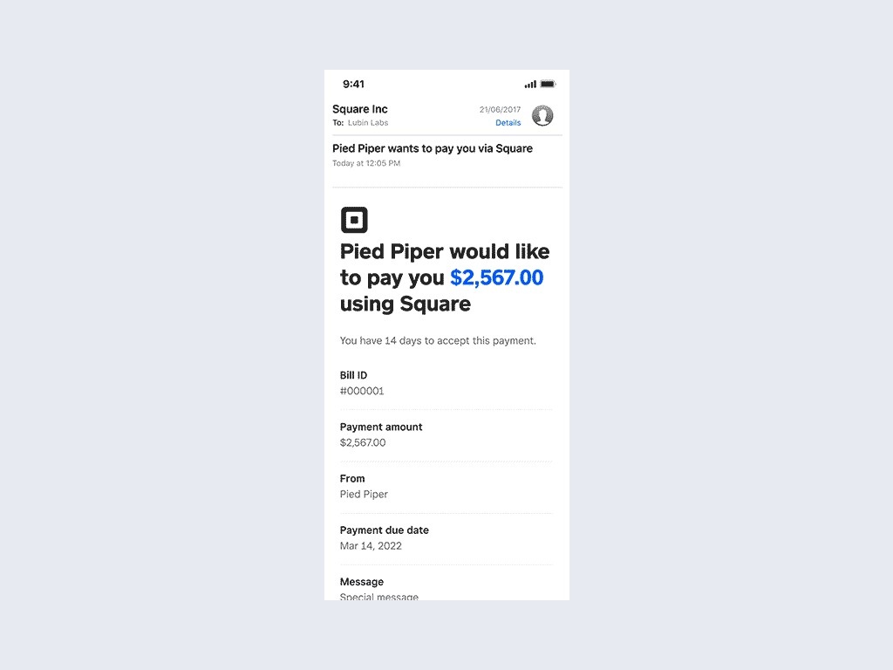

Square · Bill Pay · Vendor acceptance
Increasing Successful Payment Completion for Square Bill Pay Vendors
Building trust into Square Bill Pay's payment acceptance experience. I led design for a secure bank connection flow that gave vendors a faster, more familiar way to receive payments without relying on manual entry or printed checks.
52% → 73%
Payment acceptance completion
78% → 49%
Manual bank entry
↑
Vendor activation speed
↑
Seller payment confidence

Impact
| Metric | Before | After |
|---|---|---|
| Vendor payment acceptance completion | 52% | 73% |
| Manual bank entry | 78% | 49% |
| Vendor activation | Delayed by setup friction | Faster path to payout |
| Seller confidence | Uncertain vendor completion | Higher acceptance reliability |
The new acceptance experience did not just remove steps. It gave vendors a reason to finish setup by replacing manual data entry with a secure connection pattern they already understood from banking products.
Situation
Square Bill Pay enabled sellers to send payments to vendors, but vendors had limited ways to receive those funds.
Previously, vendors could manually enter their bank account information or download a check to process payment externally. Both options supported delivery, but they introduced friction at the moment vendors needed to take action.
Vendors wanted to get paid. Connecting a bank account made that harder than it should have been. They received an email when a payment was waiting, then faced a setup flow that asked for sensitive financial details or pushed them toward a check they might never deposit.
That created real problems on both sides of the transaction:
- Manual entry increased the chance of errors
- Vendors hesitated to share bank details without clear context
- Check based payments slowed money movement or went uncashed
- Sellers lacked confidence that vendors would successfully accept payments
The problem was not only reducing steps. We needed to build enough trust for vendors to complete setup in the first place.
Task
Help vendors securely connect their bank account and receive payments faster.
We identified an opportunity to create a more familiar banking experience by introducing a trusted account connection flow. The goal was to reduce friction without reducing confidence.
I needed to define a vendor payment acceptance experience that felt safe, explained why Square needed account access, and still met financial compliance requirements across product, engineering, and risk partners.
Action
Three workstreams from trust framing through compliant delivery.
Discovery · Reframing the problem around trust
Early exploration showed the biggest barrier was not simply the number of fields. Vendors needed confidence before they acted: why Square needed this information, whether their account was secure, and what happened after they connected.
I shifted the experience from "Enter your bank details" to "Securely connect your existing bank account." That reframing changed how we wrote copy, sequenced the flow, and evaluated success.
Strategy · A new way to get paid
The redesigned experience added a third path for vendors: connect a bank account through a trusted integration, alongside manual entry and check download.
Instead of starting with routing numbers, account numbers, and verification fields, vendors could connect via Plaid securely, enter banking information manually if they preferred, or download a check. The fastest path became the most visible one without removing fallback options compliance required.
Delivery · Designing for confidence
Financial products require users to feel safe before taking action. I partnered with product, engineering, and risk to simplify the setup journey while preserving the controls those teams needed.
Key decisions included clear expectations in messaging, familiar bank connection interaction patterns, and focused actions that guided vendors toward the fastest path to payment instead of presenting every option at once.
Exploration
Mapping vendor concerns to design opportunities.
Research surfaced three recurring concerns during setup: privacy, security, and confusing steps with no explanation of what came next. Those insights shaped an opportunity map that prioritized explaining why account connection was needed, using familiar patterns vendors recognized from other financial products, and reducing manual entry wherever possible.
Design
From manual setup to a trusted connection flow.
Before · Existing vendor payment acceptance
When a seller initiated a Bill Pay payment, the vendor received an email notification that funds were waiting. From there, they opened a payment portal with two options: enter ACH bank details manually or download a check. Manual input, limited paths, and delayed activation lowered confidence during setup.

Payment notification
Vendor receives an email that a seller would like to pay them via Square.
Open the payment portal
Vendor opens the portal from the email to accept the payment.
Enter ACH details or download a check
Vendor either types routing and account numbers or downloads a check to process elsewhere.
Verification
Additional steps confirm account details before funds move.
Payment received
Funds arrive after setup completes, often with delay or drop off along the way.
After · Secure bank connection
The new experience introduced connect bank as a primary path. Vendors authenticated through a familiar connection model, saw what information was shared, and reached confirmation faster. Manual entry and check download remained available, but the flow emphasized the path most likely to complete.
Connect bank
Vendor chooses a secure connection instead of typing account details.
Authenticate
Vendor signs in through a trusted bank connection experience.
Payment received
Funds move with fewer errors and less time between notification and payout.
Shipped experience
The final designs focused on clarity at each decision point: why connection was needed, what happened next, and how vendors could complete setup without feeling exposed.
System Impact
Established trust patterns for vendor facing payment flows.
- Secure bank connection model reusable across vendor acceptance surfaces
- Shared messaging framework explaining why account access is needed and what happens next
- Focused action pattern that guides users to the fastest compliant path without hiding required fallbacks
- Cross functional alignment between design, product, engineering, and risk on vendor setup requirements
Results
A more streamlined path for vendors to receive money.
The new payment acceptance experience increased vendor payment acceptance completion from 52% to 73% and reduced reliance on manual bank entry from 78% to 49%. Vendors reached payout faster, and sellers gained confidence that payments would actually complete.
Reflection
Payment experiences depend on trust, not just transactions.
By introducing a secure bank connection flow, we transformed vendor payment acceptance from a manual setup process into a faster, more familiar experience. In fintech, reducing friction is only half the problem. The best experiences remove uncertainty so users feel confident moving money.
This project reinforced that vendors were willing to connect their accounts when the product explained why, used patterns they recognized, and respected the sensitivity of the moment. That lesson applies anywhere money changes hands between two parties who do not share the same context.